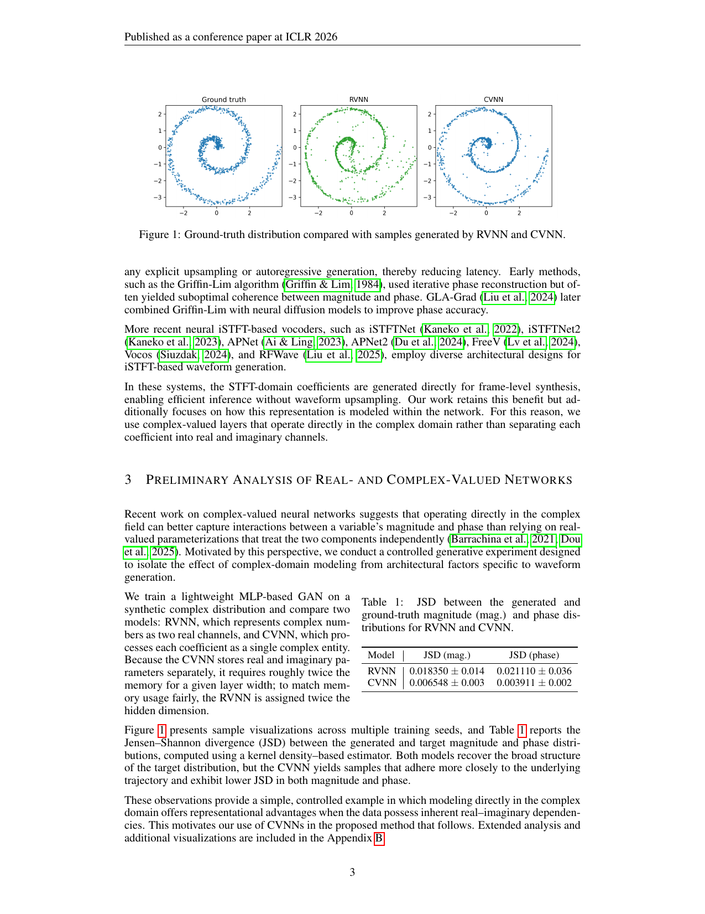
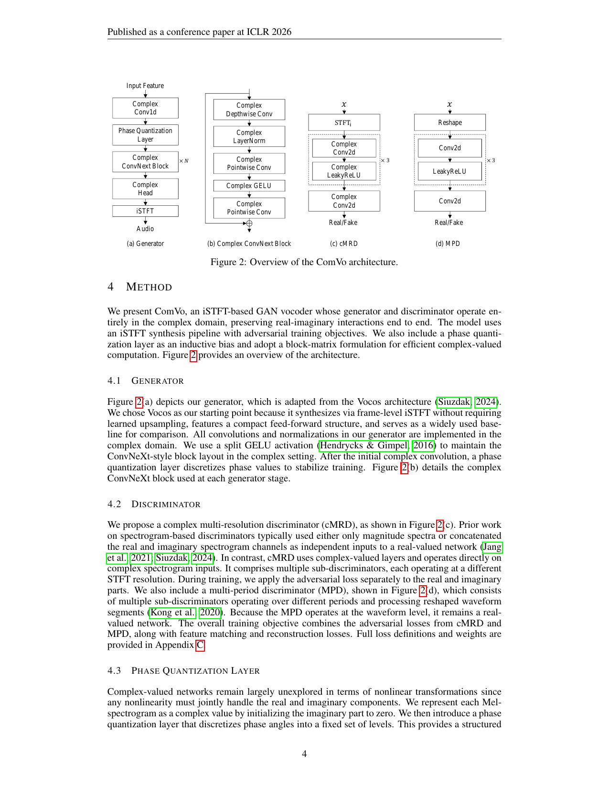

Figure 3: 判别器Grad-CAM可视化。每行对应不同STFT分辨率的子判别器。使用cMRD的配置(右两列)显示出更清晰、更结构化的关注区域。
现有iSTFT声码器使用实值神经网络(RVNN)，将复数谱图拆分为两个实数通道独立处理。这种分离处理限制了模型捕捉实部与虚部之间内在耦合的能力。
CVNN直接在复数域操作，允许输入、激活和权重都是复数值。这使得模型能够捕捉实部和虚部之间的内在依赖关系。
为了验证CVNN的优势，作者设计了合成复数分布生成任务：
Figure 1 展示了不同训练种子下的生成样本可视化：

实验结果 (Jensen-Shannon Divergence, 越低越好):
| 指标 | RVNN | CVNN | 提升 |
|---|---|---|---|
| 幅度JSD ↓ | 0.089 | 0.062 | 30% |
| 相位JSD ↓ | 0.112 | 0.078 | 30% |
Figure 2 展示了ComVo的整体架构：

将相位角θ ∈ [-π, π]离散化为K个级别：
其中K=8为论文设置。使用Straight-Through Estimator (STE)保持梯度传播。
将4次实数乘法融合为单次块矩阵运算，训练时间减少25%：
在LibriTTS数据集上的客观和主观评估结果：
| 模型 | MOS↑ | UTMOS↑ | PESQ↑ | MR-STFT↓ | 参数量 |
|---|---|---|---|---|---|
| HiFi-GAN | 4.18 | 3.85 | 3.82 | 1.245 | 13.9M |
| BigVGAN | 4.16 | 3.81 | 3.79 | 1.289 | 14.1M |
| Vocos | 4.02 | 3.78 | 3.65 | 1.312 | 0.8M |
| ComVo | 4.20 | 3.88 | 3.91 | 1.089 | 1.1M |
Figure 3 展示了判别器的Grad-CAM激活图：
观察: 复数判别器(cMRD)提供更精确的频谱反馈，帮助生成器更好地匹配感知重要特征。
对比不同生成器-判别器组合的效果：
| 配置 | 生成器 | 判别器 | MR-STFT↓ | UTMOS↑ |
|---|---|---|---|---|
| GRDR | 实值 | 实值MRD | 1.245 | 3.72 |
| GCDR | 复数 | 实值MRD | 1.182 | 3.79 |
| GRDC | 实值 | 复数cMRD | 1.156 | 3.81 |
| GCDC | 复数 | 复数cMRD | 1.089 | 3.88 |
| Nq (量化级别) | MR-STFT↓ | UTMOS↑ | PESQ↑ |
|---|---|---|---|
| 0 (无量化) | 1.089 | 3.82 | 3.85 |
| 128 | 1.102 | 3.88 | 3.91 |
| 256 | 1.108 | 3.87 | 3.90 |
| 实现 | 训练时间 | 生成器反向节点 | cMRD反向节点 |
|---|---|---|---|
| 标准PyTorch复数 | 100% | 基准 | 基准 |
| 块矩阵优化 | 75% (-25%) | -55% | -67% |
分析完成 | 2026-03-18 | ICLR 2026 Accepted
arXiv:2603.11589 |
项目主页